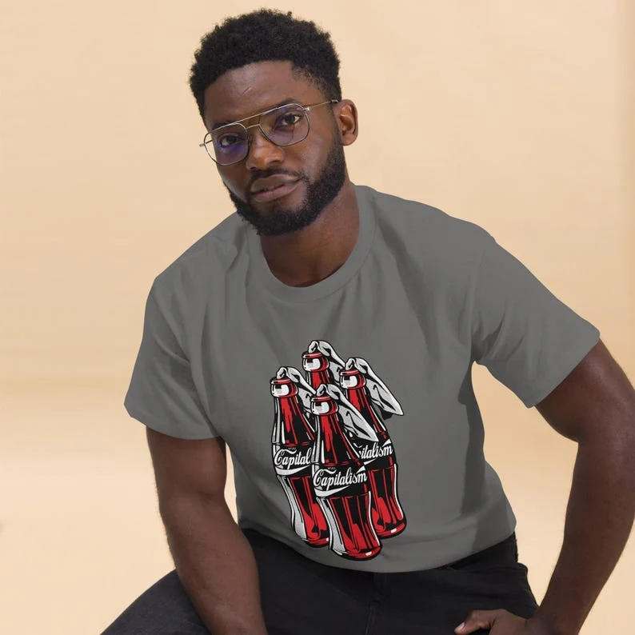

Graphic tees

Graphic tees / Nino Battaglia
A retro music-TV style logo badge in bold primary colors — a throwback for anyone raised on late-night videos.
From $25
Printed to order on the Gildan 5000 heavy cotton tee — classic unisex fit. Sizing & care ↗ · Delivery ↗
Graphic tees

Graphic tees

Graphic tees

Graphic tees